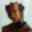

| ||||||||||||
|  | ||||||||||||

| ||||||||||||
John Nelson is a carver from Adelaide, South Australia, who tends to
specialise in miniatures although his output also includes larger works. He
has been producing work for sale only over the last four years. His work is
of a quite individual, detailed style. Several of his pieces combine
different timbers to take advantage of natural colours and textures; all of
those shown here are technically difficult and have taken months to complete.
Much of John's miniature work depicts small creatures of the Australian
environment, some of them from the "endangered species" list. He finds the
delicacy and intricacy of the invertebrate fauna very attractive, and
generally speaking, thinks they are visually more interesting than the warm,
cuddly but homogenous mammals.
The rare and endangered ant Nothomyrmecia Macrops carved in redgum and
depicted here won its section in the Endangered Wildlife of AUstralia
exhibition held in 1994. This carving has since been sold. John however,
is prepared to accept a commission for a variation of this piece, as he is
keen to attempt the fearsome bulldog ant!
John Nelson's non-miniatures are quite different in concept and have
strange, fantasy themes. He hopes to present some of these for sale through
this site, quite soon.
Webmaster: woodart@woodart.com.au
Credits: Those who helped create these pages.
Link us: Click here to find out how to link your pages to ours!
Copyright: Copyright © Australian Wood Artisans Promotions 1995/2000. All rights reserved.